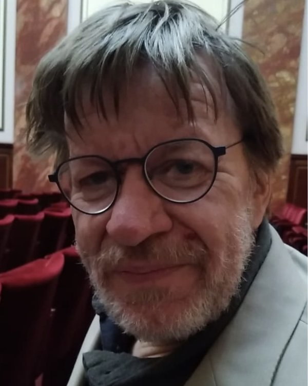

Søren Riis
Reader in Computer Science

I am a Reader in Computer Science in the School of Electronic Engineering and Computer Science (EECS), Queen Mary University of London.
Featured work
Drift and selection in LLM text ecosystems
A new preprint on recursive public text environments, separating neutral drift from normative selection, with direct links to the paper and video overview.
About
My research focuses on the foundations of computer science, particularly the interplay between logic, complexity theory, and algorithms. I am interested in understanding fundamental limits of computation and the structure of mathematical proofs.
This page is designed to be easy to extend: add new sections, links to slides, videos, project pages, etc. (You can search for “TODO” in the HTML to find the main extension points.)
Research
Research interests
Current projects
- Information about current projects and collaborations.
Selected research demos
Interactive demonstrations and teaching tools.
-
Impartial 4×4 game: full nimber explorer
Full-state explorer with Grundy values, legal-move nimbers, and maximal-nimber position search. -
Maximal Condorcet domains (n = 4 or 5)
Explorer for maximal unitary Condorcet domains with bundled data and adjacent-swap graph views. -
All 6 research demos
Complete list of interactive demos, including graph guessing games, waiting-time non-transitivity, and NIM teaching tools.
Publications
Full publication list: DBLP Google Scholar
Recent unpublished preprints
-
Drift and selection in LLM text ecosystems
Søren Riis (2026)
PDF Video (MP4) -
Coin flipping and waiting times paradoxes: Why fair coins are exceptional
Søren Riis, Mike Paterson (2026)
arXiv Video (MP4) -
Term Coding: An Entropic Framework for Extremal Combinatorics and the Guessing--Number Sandwich Theorem
Søren Riis (2026)
arXiv -
Mastering NIM and Impartial Games with Weak Neural Networks: An AlphaZero-inspired Multi-Frame Approach
Søren Riis (2026)
arXiv Video (MP4) -
Improved lower bounds for the maximum size of Condorcet domains
Alexander Karpov, Klas Markstrom, Soren Riis, Bei Zhou (2026)
arXiv
All publications
The list below is loaded from DBLP (with light de-duplication of preprint/journal variants).
- Loading…
Teaching
I teach undergraduate and postgraduate modules at Queen Mary University of London.
- ECS407U: Introduction to Logic and discrete Structures
- ECS651U: Complexity and Computation
Talks & presentations
I plan to add slides and recordings here (seminar talks, conference presentations, teaching videos, etc.).
2020s
-
Coin racing and waiting-time paradoxes: why fair coins are exceptional
DIMAP Seminar, University of Warwick – 26 Jan 2026
Slides (PDF)
2010s
-
Ada Lovelace, a scientist in the archives
Ada Lovelace 200 Symposium, University of Oxford – 9 Dec 2015
Video -
Graph guessing games and non-Shannon information inequalities
Workshop on Entropy and Information Inequalities, CUHK – 17 Apr 2013
Video link forthcoming. -
Network Coding with Distributed Coding Functions
CUHK EECS Seminar – 12 Apr 2013
Video link forthcoming. -
Valiant’s Shift Problem
Isaac Newton Institute, Cambridge – 9 May 2012
Video -
A logician’s approach to Network Coding
Isaac Newton Institute, Cambridge – 10 Feb 2012
Video
2000s
-
Graph Entropy, Network Coding and Guessing Games
ZiF Workshop, Bielefeld – Nov 2012
No slides or video available
1990s
-
More on the relative strength of counting principles
DIMACS Workshop, Rutgers University – May 1996 -
Complexity Gaps for Unsatisfiability Problems
BRICS Seminar, Aarhus – 14 Dec 1998 -
Complexity Gaps for Nullstellensatz Proofs
Fields Institute Workshop, Toronto – 1998
Henri Poincaré Institute (2016)
-
Finite Dynamical Systems, Causal Networks and Information Inequalities – Lecture Series
Institut Henri-Poincaré, Paris – Feb 2016
Part 1A Video | Part 2A Video | Part 2B Video
Links
Contact
Email: s.riis@qmul.ac.uk
Office: Peter Landin Building, Mile End Campus
Address: Queen Mary University of London, Mile End Road, London E1 4NS, UK